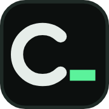

A · prompt >_ 흰 꺾쇠 + 초록 커서
가장 단순하고 분명하다. 꺾쇠와 밑줄 커서가 16px에서도 따로 보인다. 히어로 $ history_, 로고 ~/comstering_와 같은 "프롬프트 + 커서" 말투. 단점: 터미널 앱·개발 도구 아이콘과 거의 같은 모양이라 탭이 많을 때 우리 사이트로 구별되지 않고, 사이트 이름과의 연결이 없다.
현재 파비콘(흰 배경에 "Comstering's Dev Notes" 필기체)은 탭 크기에서 읽을 수 없어 교체한다. 후보는 모두 Terminal Graphite 색(canvas 어두운 사각형, fg 흰 글자, accent 커서)이고, 16px에서 읽히도록 획을 굵게 단순화했다. 브라우저 탭 배경은 사이트 테마가 아니라 브라우저 테마를 따르므로 어두운 사각형을 깔아 라이트·다크 탭 모두에서 보이게 했다.
가장 단순하고 분명하다. 꺾쇠와 밑줄 커서가 16px에서도 따로 보인다. 히어로 $ history_, 로고 ~/comstering_와 같은 "프롬프트 + 커서" 말투. 단점: 터미널 앱·개발 도구 아이콘과 거의 같은 모양이라 탭이 많을 때 우리 사이트로 구별되지 않고, 사이트 이름과의 연결이 없다.
탭 줄에서 가장 눈에 띈다. 많은 탭 속에서 찾기 쉽다. 단점: 사이트 전체가 "어두운 그래파이트 + 커서 하나"인데 이 아이콘만 면 전체가 초록이라 accent를 아껴 쓰는 원칙(사용 비율 3% 이하)과 결이 다르다. 홈 화면 아이콘으로는 강하다.

이름과 연결되고 탭에서도 구별된다. comstering의 c에 로고 끝의 커서 _를 붙여 워드마크 ~/comstering_의 끝부분을 그대로 줄인 모양이다. 탭 크기(16px)에서 "c_"로 읽힌다. 단점: 둥근 획이라 16px에서 가장자리가 부드럽게 번지고, 아주 작게 보면 "c-"로도 보인다.
history의 h. 히어로 명령과 연결되고 형태가 단순해 16px에서도 잘 읽힌다. 단점: 이름(comstering)이 아니라 명령어에서 온 글자라, 히어로 명령이 바뀌면 의미가 사라진다. 흰 "h."가 마침표처럼도 보인다.
로고의 ~/를 그대로. 워드마크의 시작과 직접 이어진다. 탭 크기에서도 ~/로 읽히지만, 물결의 굴곡이 2px 안팎이라 5종 중 획이 가장 가늘고 흐리다(16px 8배 확대 참고). 이름이나 커서 요소가 없어 "무슨 사이트인지"는 약하다.